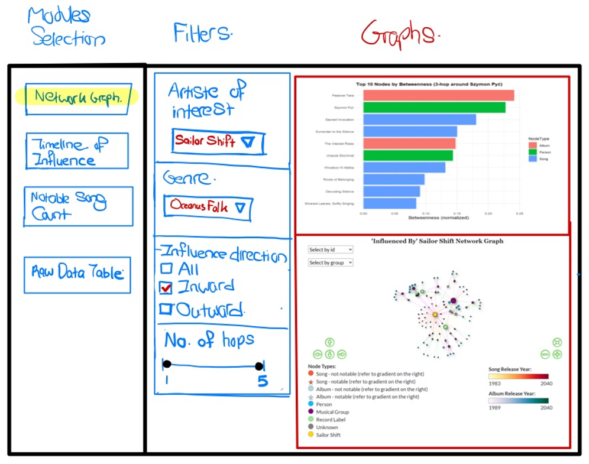
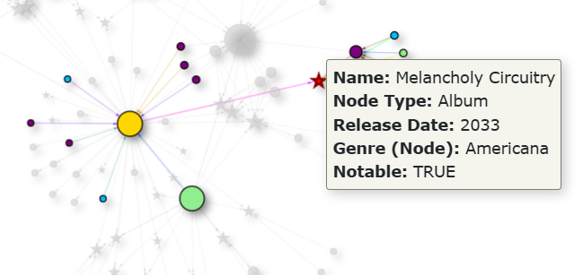
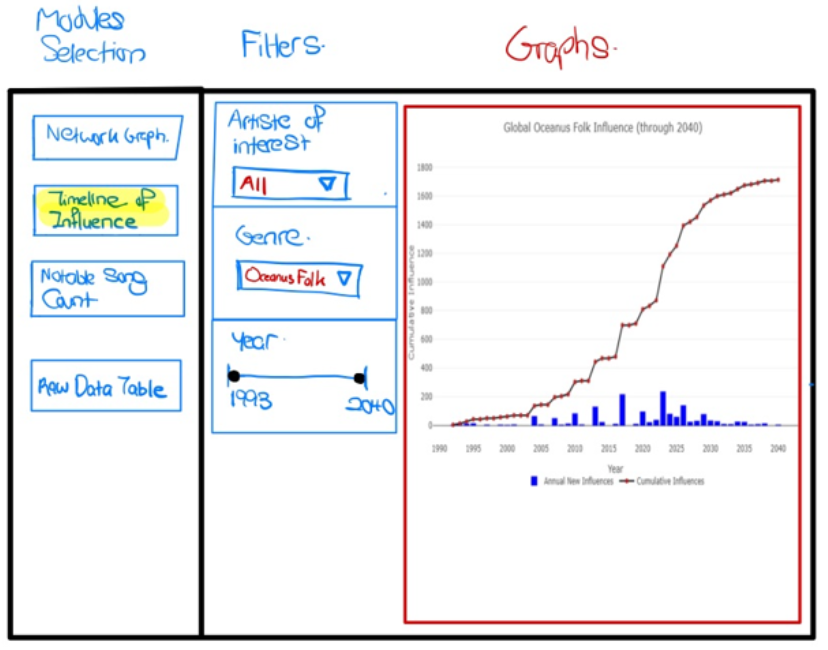
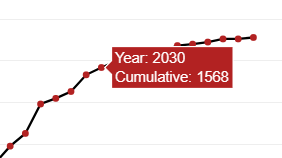
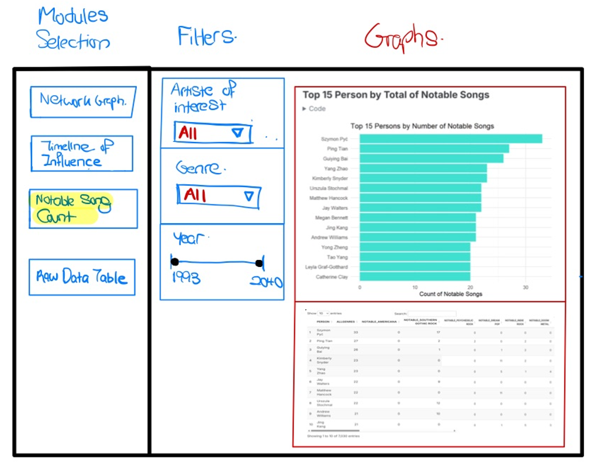

Take Home Exercise 03
Background
Following the Mini-Challenge 1 from the VAST Challenge 2025 and the dataset provided for this mini-challenge:
A local journalist, Silas Reed, is writing a feature titled Oceanus Folk: Then-and-Now to trace the rise of Sailor and the influence of Oceanus Folk on the global music scene. He has compiled a large dataset of musical artistes, producers, albums, songs, and influence relationships into a knowledge graph. The task is to assist Silas by developing informative and visually compelling data visualizations to uncover insights about Sailor’s background, her ascent to stardom, and her impact on the music industry.
Introduction
In this exercise, we will be proposing the development of an R Shiny dashboard to visualize relationships and influences among artistes, albums, and songs, with a specific focus on Sailor Shift and the Oceanus Folk genre. The dashboard will enable users to explore the evolving influence of Sailor and other artistes through interactive network and time-based visualizations.
This dashboard tool will help users, such as Silas, to effectively transform the raw relational data to visualize the relationships and links between different artistes. The user will be able to use this tool to hypothesize about trends in the music industry and forecast future developments based on the influence pathways.
Methodology
To meet user needs, the dashboard will include features that highlight relevant interactions within the dataset.
The MC1 dataset used comprises of nodes (such as Persons, MusicalGroups, Songs, Albums) and the edges (such as PerformerOf, LyricistOf, InStyleOf) showing the interaction between the nodes.
The development steps will include:
Data Extraction - Separating the MC1 json dataset into the node and edge components
Data Cleaning - To ensure consistency and validity of identifiers, timestamps and relationships
Transformation and Modelling - Adjusting the data type if needed, processing the data to make it usable for visualizations and interactions
Visualizations - Creating modules for the Shiny App that represent the following:
Influence pathways using a network graph
Time Based Influence
Notable Song Contributions
Storyboard
The Shiny application will feature a sidebar layout, with a module selection panel and module specific filters on the left. The selected visualization from each module will be displayed in the main panel. The application will consist of three primary modules. For each of these modules, interactive features are introduced to allow the user to filter the data, review the graphs and obtain more information from points of interest from the visualizations.
Module 1: Influence Network Graph
With this visualization, the user can view how the different artistes are influenced by one another based on their interactions through a network graph placed on the bottom of the main panel, which will allow the user to connect one artiste to another through the network graph. To further display the measure of influence of a artiste or musical group, the betweenness of the artiste or musical group is visualized with a bar graph to show the top 10 artiste or musical group by the betweenness measure.
The filters for this module will include the Artiste of interest, the Genre of music, the direction of influence and the number of “hops” of the network graph to control how far the influences should be visualized. This will allow the user to filter what he/she is interested in and filter accordingly for a visualization of the data of interest.

The network graph will also have interactivity with it such that the user can select nodes on the visualisation and the nodes linked to the selected node will be highlighted. Another interactive feature is that hovering over the nodes or edges will display the information of the edge type, and for the nodes more detailed information will be displayed similar to the example shown below
When the node Melancholy Circuitry is clicked, the nearby nodes and edges linked to it are highlighted as well. Additionally by hovering over the node, information on the node is displayed on it.
Module 2: Timeline of Influence
In this Second module, the influence over time is shown utilizing a composite line and bar chart, with the line chart showing the cumulative influences and the bar charts showing the yearly influences.
The filters on the right show the filters available for the user for this module which are the Artiste of interest, Genre, and the Year. These filters will allow the user to view the influences based on a combination of the artiste of interest and the genre.
Additionally, the years of influence can be adjusted by the slider to adjust the number of years to be displayed on the visualization to better have a overall picture of the trend, or to zoom in on specific time periods.

Interactivity is also introduced in this graph where hovering over certain points of the line graph will display the year and cumulative count of influences as shown in the example below for they year 2030.

Module 3: Notable Song Counts
In the 3rd module, a bar chart showing the top 15 most influential artistes based on the number of notable songs attributed to them.
Below this bar chart is a table showing the breakdown of the song genres and count of them who were influence by the artiste of interest selected.
The filters for this module are the artiste of interest, the genre and the year. This will allow the user to select the artiste of interest, and we will be able to view who among the most influential artistes were influence by the artiste of influence. Such in the case of Sailor Shift, the user can filter and find out who was influenced by Sailor Shift and has the most number of notable songs, which could be a indication of said artiste’s climb to popularity. The genre filter will enable the user to filter by the genre of music and the year slider filter will also enable the user to visualize the person and the notable song counts within a certain time period.
